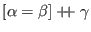

It's useful to write Ur functions and functors that take record constructors as inputs, but these constructors can grow quite long, even though their values are often implied by other arguments. The compiler uses a simple heuristic to infer the values of unification variables that are mapped over, yielding known results. If the result is empty, we're done; if it's not empty, we replace a single unification variable with a new constructor formed from three new unification variables, as in  . This process can often be repeated to determine a unification variable fully.